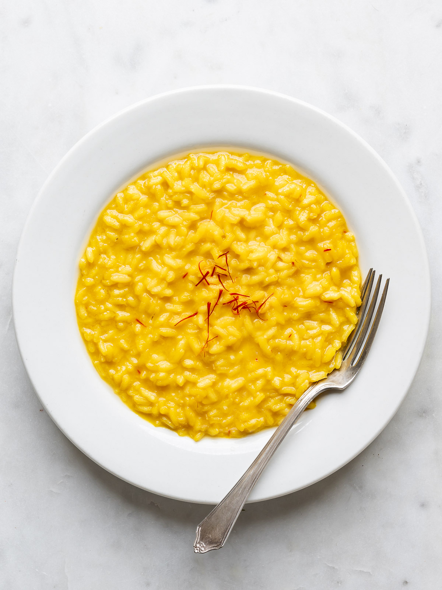

Sicilian pizza isn’t just a dish — it’s basically a culinary legend. With its thick, airy crust, golden edges, and generous toppings,
it’s a staple of everyday life in Sicily. You’ll see families gathering around a tray of it, tearing off pieces straight from the pan
like it’s the most normal thing ever… because it is. What makes it iconic is its simplicity and authenticity: fresh dough, rich tomato
sauce, local cheeses, and a few carefully chosen toppings — nothing complicated, just pure Italian craft. Baked until perfectly crisp
on the bottom, every slice tells a story of Sicilian tradition and flavor. It’s hearty, it’s timeless, and honestly, it’s one of the
best ways to taste the true spirit of Italy. If you want to experience Sicily like a local, start with a warm slice of Sicilian
pizza — you won’t regret it.
Risotto

Risotto isn’t just a meal — it’s a true Italian ritual. With its creamy texture, perfectly tender rice, and rich flavors, it’s a dish
that brings people together around the table. You’ll see chefs stirring it slowly, adding broth drop by drop, like it’s a delicate art
form… because it is. What makes it iconic is the attention to detail: just the right type of rice, fresh ingredients, and patient,
careful cooking. From saffron-infused Risotto alla Milanese to mushroom risottos in cozy trattorias, every bite tells a story of
Italy’s culinary tradition. It’s comforting, timeless, and honestly, one of the best ways to taste the heart of Italian cooking.
If you want to experience Italy like a local, start with a creamy risotto and savor every spoonful.
Carbonara
Pasta alla Carbonara isn’t just a pasta dish — it’s a symbol of Roman culinary genius. With its creamy sauce made from eggs, Pecorino
Romano cheese, crispy guanciale, and freshly cracked black pepper, it’s simple yet unforgettable. You’ll see locals twirling it on
their forks in bustling trattorias, savoring every bite like it’s a ritual… because it truly is. What makes it iconic is its balance:
rich flavors without cream, just pure ingredients and technique passed down through generations. Each mouthful tells a story of
tradition, passion, and the art of Italian cooking. It’s comforting, timeless, and honestly, one of the best ways to taste the
authentic spirit of Rome. If you want to experience Italy like a local, start with a classic Carbonara — you won’t regret it.
Gelato
Gelato isn’t just ice cream — it’s a quintessential taste of Italy. With its silky texture, intense flavors, and vibrant colors,
gelato is a treat that locals and travelers alike can’t resist. You’ll see people strolling through piazzas, savoring cones or cups,
enjoying every creamy bite… because it’s a daily delight. What makes it iconic is its craftsmanship: fresh, high-quality ingredients,
slower churning, and less air than regular ice cream, creating a denser, more flavorful experience. From classic stracciatella to
seasonal fruit flavors, every scoop tells a story of Italian tradition and passion for food. It’s refreshing, timeless, and honestly,
one of the most delicious ways to experience Italy. If you want to taste Italy like a local, grab a gelato and enjoy the moment.
Tiramisu
Tiramisu isn’t just a dessert — it’s a little slice of Italian history and indulgence. With its layers of espresso-soaked ladyfingers,
creamy mascarpone, and a dusting of cocoa, it’s a treat that delights every sense. You’ll see it served in cozy trattorias and elegant
cafés alike, a perfect ending to any meal… because it’s that special. What makes it iconic is its balance: rich but light, sweet but
never overwhelming, simple ingredients creating something truly unforgettable. Each bite tells a story of tradition, care, and the art
of Italian desserts. It’s decadent, timeless, and honestly, one of the easiest ways to experience Italy’s culinary heart. If you want
to taste Italy like a local, don’t skip a classic tiramisu — you’ll thank me later.
Cannoli
Cannoli aren’t just pastries — they’re a sweet emblem of Sicilian tradition. With their crisp, golden shells filled with creamy
ricotta and often dotted with chocolate chips or candied fruit, they’re a dessert that instantly brings a smile. You’ll see them
served in bustling pasticcerias or homemade in family kitchens, each one crafted with care… because every bite matters. What makes
them iconic is their balance: crunchy yet soft, sweet but never overpowering, simple ingredients transformed into something
extraordinary. Every cannolo tells a story of Sicily’s rich culinary heritage and the love Italians pour into their food.
It’s delightful, timeless, and honestly, one of the tastiest ways to experience Italian culture. If you want to savor Italy like
a local, try a fresh cannolo — you’ll understand why it’s adored worldwide.